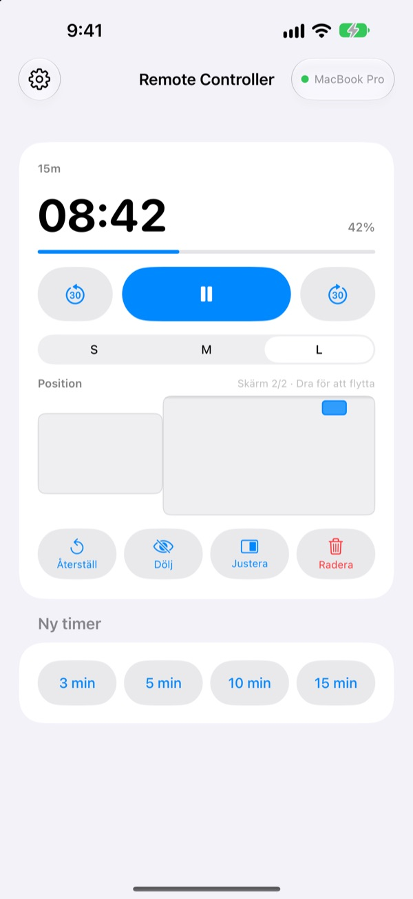
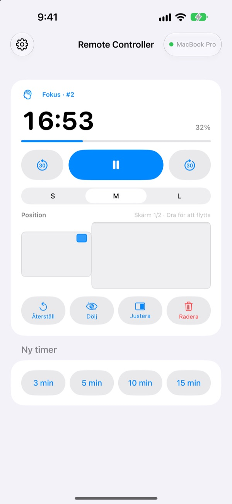
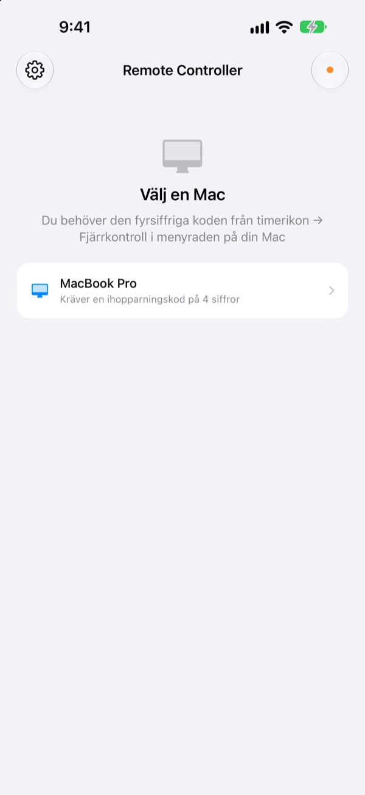

Macen står kvar.
Timern har du i handen.
Styr timrarna i StickyPresenter på din Mac från din iPhone. Du står längst fram i rummet och ser ändå hur mycket tid som är kvar, pausar, lägger till 30 sekunder eller flyttar timern från diagrammet den skymmer.
Gratis · iOS 17 eller senare · Kräver en Mac med StickyPresenter på samma Wi‑Fi.

Går du fortfarande tillbaka till datorn för att röra timern?
Föredraget drar över och du behöver mer tid. Timern ligger precis ovanpå ditt viktigaste diagram. Hittills har det betytt att gå över scenen och sträcka dig efter styrplattan inför alla. Med Remote Controller står du kvar och trycker en gång på din iPhone.
Se återstående tid och justera direkt
Återstående tid och förlopp uppdateras varje sekund. Under en pomodoro ser du också om det är fokus eller paus och vilken cykel du är på.
Drar det över? Lägg till 30 sekunder. Blir du klar tidigare? Dra bort 30. Starta en ny timer på 3, 5, 10 eller 15 minuter med ett tryck, och växla widgeten mellan S, M och L så att även bakersta raden kan läsa den.

Ange koden en gång, sedan är det klart
Öppna appen så visas alla Mac-datorer på ditt Wi‑Fi som kör StickyPresenter i en lista. Välj din och skriv in den fyrsiffriga koden från timerikon ▸ Fjärrkontroll i Macens menyrad.
Därefter ansluter appen själv till den Macen varje gång du öppnar den. Inget konto, ingen server: de två enheterna pratar direkt med varandra över ditt lokala nätverk.

Igång i tre steg
- 1
Öppna StickyPresenter på din Mac
När timerikonen syns i menyraden är du redo. Appen blir kvar där även om du stänger alla fönster.
- 2
Öppna appen på samma Wi‑Fi
När den ber om åtkomst till lokalt nätverk trycker du på Tillåt. Det är så den hittar din Mac.
- 3
Välj din Mac och ange koden
Skriv in den fyrsiffriga ihopparningskoden från timerikon ▸ Fjärrkontroll i Macens menyrad, så har du kontrollen.
Det här gör du från din iPhone
- Återstående tid
- Tid kvar, förlopp, pomodorofas fokus eller paus och cykelnummer, varje sekund
- Starta · Pausa
- En stor knapp i mitten
- −30 s · +30 s
- Knapparna på varsin sida justerar en pågående timer direkt
- Ny timer
- 3, 5, 10 eller 15 minuter
- Widgetstorlek
- Widget i S, M eller L
- Position
- Dra den på en miniatyr av din Macs skärmlayout, även över till en extra skärm
- Dölj
- Dölj widgeten för publiken en stund
- Justera
- Hämta tillbaka en borttappad widget bredvid timerfönstret
- Återställ · Radera
- Börja om timern eller ta bort den
- Genvägar · Siri
- Säg
Starta en timer med Remote Controllerså startar en timer på din Mac
Fjärrkontrollen fungerar bara med timrar som körs på din Mac. Lappar och teleprompter-manus skickas aldrig till iPhone, och den byter inte bilder.
Frågor
Kan jag använda iPhone-appen på egen hand?
Nej. Remote Controller är fjärrkontrollen till StickyPresenter på Mac, så StickyPresenter måste köras på en Mac på samma Wi‑Fi. Hämta Mac-appen via länken nedan eller under Hämta Mac-appen i appens inställningar.
Min Mac syns inte i listan.
Om ingen Mac har dykt upp efter 10 sekunder visar appen en checklista. Gå igenom den uppifrån: StickyPresenter körs på din Mac (titta efter timerikonen i menyraden), båda enheterna är på samma Wi‑Fi (gästnätverk fungerar inte), Remote Controller är påslagen på iPhone under Inställningar ▸ Integritet och säkerhet ▸ Lokalt nätverk, StickyPresenter är tillåten på Macen under Systeminställningar ▸ Integritet och säkerhet ▸ Lokalt nätverk, och eventuellt VPN är avstängt.
Appen säger att ihopparningskoden är fel.
Ange de fyra siffror som visas just nu under timerikon ▸ Fjärrkontroll i Macens menyrad. Om någon har klickat på Ny ihopparningskod på Macen fungerar bara den nya koden.
Appen säger att Macen inte känner igen den här iPhonen.
Det händer efter Glöm ihopparade fjärrkontroller på Macen, eller efter att StickyPresenter har installerats om. Tryck på Macen i listan och ange ihopparningskoden en gång till.
Appen säger att Macen inte svarar.
Kontrollera att Macen inte är i vila, att båda enheterna är på samma Wi‑Fi och att eventuellt VPN är avstängt.
Appen säger att Mac-appen behöver uppdateras.
StickyPresenter på din Mac är äldre än fjärrkontrollen. Uppdatera den i Mac App Store och välj sedan Macen igen.
Är det säkert i ett mötesrum fullt av Mac-datorer?
Ja. Fjärrkontrollen pratar bara med den enda Mac den är ihopparad med, och en fjärrkontroll som inte kan din kod kommer inte åt din Mac. Allt går över en krypterad, direkt anslutning på samma nätverk. Har du någon gång visat din kod för någon, klicka på Ny ihopparningskod på Macen.
Vad skickas över internet?
Dina timrar och kommandon lämnar aldrig ditt lokala nätverk. Det enda som skickas över internet är anonym användningsstatistik, kraschrapporter och feedback som du själv väljer att skicka. Detaljerna finns i integritetspolicyn.
Kan Siri starta en timer precis innan jag går upp?
Ja. Säg ”Starta en timer med Remote Controller”, eller använd åtgärden Starta timer på Mac i Genvägar. Appen öppnas och startar en timer med den längd du valt (1 till 600 minuter) så fort den har anslutit till din Mac.
Frågor, buggar eller idéer? Skriv till mizzking75@gmail.com, eller skicka dem direkt från din iPhone via kugghjulet uppe till vänster i appen ▸ Feedback.